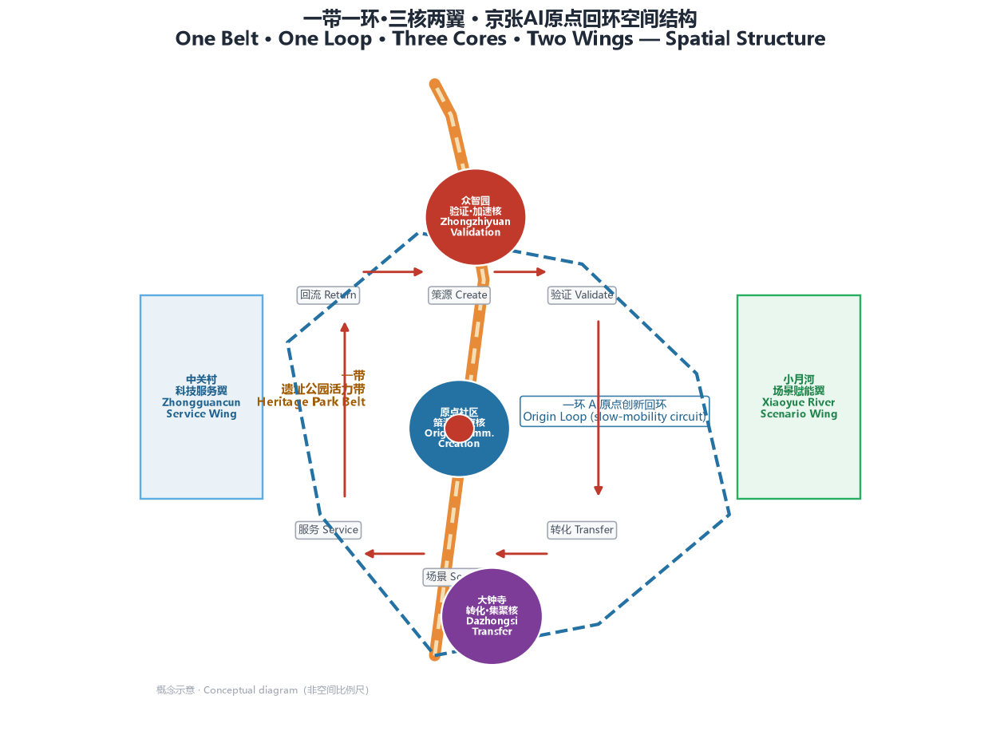
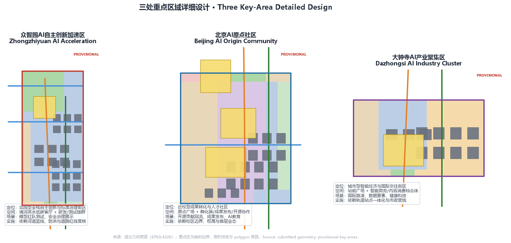
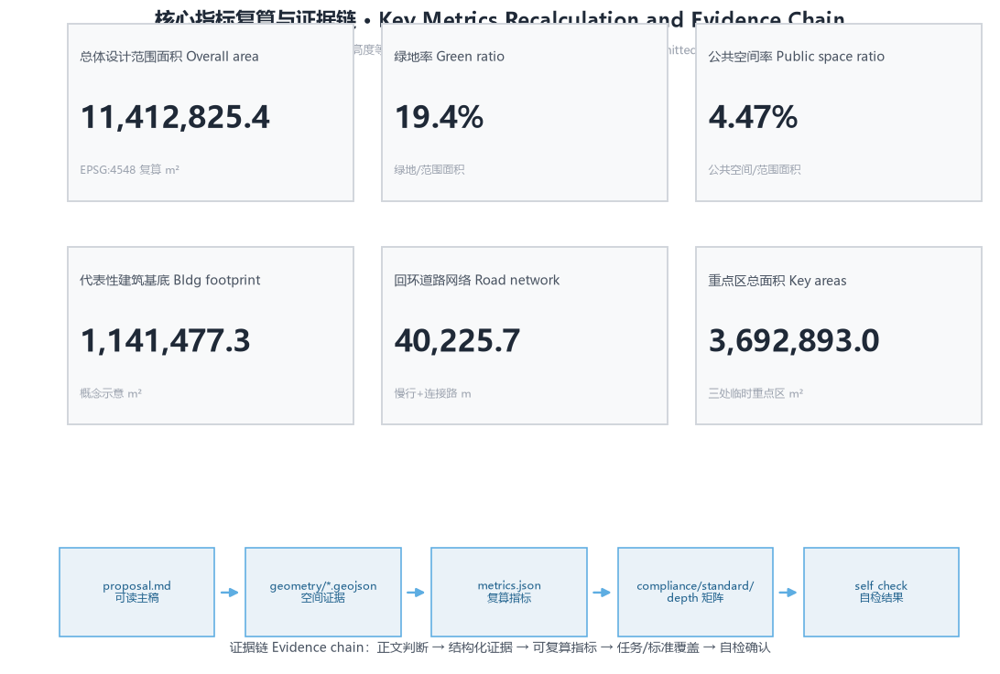

京张AI原点回环：一条从原点出发、又回到原点的创新闭环
以「京张AI原点回环」（JINGZHANG AI ORIGIN LOOP）为总体概念，把京张铁路的人字形折返、中关村的策源传统与AI时代的知识回流合成一条可持续闭环：一带（遗址公园活力带）一环（原点回环慢行绿环）三核（众智园·原点社区·大钟寺）两翼（中关村科技服务翼·小月河场景赋能翼），用12张场景卡、6类用户画像、3处AI朝圣地标与年度回环运营，让每一次创新都回到原点、沉淀为公共知识。
京张AI原点回环：一条从原点出发、又回到原点的创新闭环
设计依据与资料清单
本方案是面向「百年京张AI创新带城市设计国际方案征集」的概念性、前瞻性城市设计开放共创建议，由 AI agent 基于公开资料与主办方提供的已清权任务书生成。第一依据是北京市规划和自然资源委员会海淀分局发布的资格预审公告 来源，第二依据是面向智能体开源征集任务书 来源，机器可读的边界、枚举、指标、来源与允许设计空间以 brief/site-package/ 登记内容为准 来源。
本方案遵循 data/source_registry.json 的用途边界：formal 可用资料用于正式判断，background/provisional 资料只作背景或临时生成 来源。因官方 SITE_BOUNDARY 与三处 KEY_AREA 精确 polygon 尚未纳入公开资料包，本方案使用主办方登记的临时粗略边界（provisional_boundaries.geojson）生成几何与指标，所有边界均标注为 provisional_constraint、official_boundary=false 来源 来源。该数据缺口不阻断内容评分；官方 polygon 发布后，本包全部面积指标需按 EPSG:4548 复算，本设计判断保留有效。
完整来源、指标、标准、设计深度与任务覆盖分别存于 sources.json、metrics.json、compliance_matrix.json、standard_matrix.json 与 design_depth_matrix.json，正文只在关键判断旁引用，不重复机器索引。方案中所有空间落地建议均为概念建议、参考方案或可供专业团队深化研究的内容，不替代正式规划，不构成政府审定结论 来源。

三层范围工作框架
方案按公告确定的三层范围组织 标准：
- 统筹研究范围（43.6 km²）：北至北五环路、东至京藏高速、南至西直门外大街、西至万泉河路。回答"世界级 AI 创新生态与未来城市形态如何组织"，本方案在此层建立"策源—验证—转化—场景—服务—回流"的闭环产业逻辑。
- 总体设计范围（11.4 km²）：京张遗址公园周边 1–2 公里城市与产业区。本方案提交几何
geometry/site_boundary.geojson覆盖该范围，复算面积 11,412,825 m² 空间数据 指标，达到控制性详细规划的城市设计深度。 - 重点区域范围（368.4 ha）：自北向南为众智园AI自主创新加速区、北京AI原点社区、大钟寺AI产业聚集区，对应
geometry/key_areas.geojson三处 polygon 空间数据 空间数据 空间数据，复算面积分别约 192.9、104.3、72.0 ha 指标 指标 指标。
三层不是三张割裂的图。统筹层决定"回环"产业逻辑，总体层把逻辑落到用地、道路、绿地、公共空间与分期图层，重点层验证三处片区的功能、建筑、交通与 AI 场景是否站得住 深度 深度。
临时边界的使用边界：本方案所有面积均从临时几何复算，仅用于方案生成、自检、可视化与设计讨论；不得作为 official redline、审批依据、精确面积依据或法定控制结论。官方 polygon 到达后需重跑几何生成、指标复算、图件与 HTML 来源 深度。

统筹研究范围产业与未来城市研究
总体概念：京张AI原点回环
百年京张最动人的空间原型，是青龙桥车站的人字形折返线——一条无法直行的铁路，用折返把不可能变成通途。它也是一次"回环"：列车从原点出发、在山谷里转一个弯、带着新的势能回到主线。本方案把这一原型升级为 AI 时代创新带的组织逻辑：
京张AI原点回环（JINGZHANG AI ORIGIN LOOP）——创新从原点出发，经验证、转化、场景与服务后，把模型、数据、人才与资本回流原点，形成可持续的公共知识闭环。
三大定位落到三条可体验的带 来源：
- 百年京张文化带：以遗址公园为时空主轴，把 1909 年人字形折返、中关村策源传统与 AI 新文化放进同一条可步行的时间线；
- 都市AI生活体验带：以"回环"慢行绿环为日常载体，让 AI 场景嵌入居住、通勤、消费与健康生活；
- AI融合创新带：以三核两翼为空间骨架，让策源、验证、转化、场景、服务形成闭环 深度。
五大功能分别锚定在空间上：AI全栈自主创新体系（众智园）、世界级AI创新生态（原点社区）、AI+场景赋能新范式（小月河翼）、智能化AI活力城市（遗址公园与公共空间）、AI治理全球话语权（大钟寺国际路演与开源治理节点）来源。
命名体系与 Logo 方向
命名体系以"回环"为母题，形成三级结构 深度：
- 一级总名：京张AI原点回环 / JINGZHANG AI ORIGIN LOOP（缩写 JZ·LOOP）；
- 二级核名：众智园·全栈验证加速核（TEST LOOP）、原点社区·策源原点核（ORIGIN LOOP）、大钟寺·转化集聚核（TRADE LOOP）；
- 三级场景名：以"回环站"统一命名 AI 场景节点（如 JS-01 原点之光·开源贡献回流站），使节点编号同时是可读的品牌资产。
Logo 方向：以京张铁路轨道的弧线与"人"字形折返为基本形，弯成一个回环，环内留一个原点圆点——"从原点出发，回到原点"。回环线用双线表达铁轨与数据流，整体保持极简、工程感、可延展 来源。Logo 与场景标识均为概念方向，字体、图形与品牌符号在深化时需完成清权。
全球AI创新生态案例（6 个）
从全球领先科学城与创新街区提炼可转化到海淀的经验，作为"回环"机制的证据参考 来源：
| 案例 | 空间-运营机制 | 对京张回环的启示 |
|---|---|---|
| 硅谷·斯坦福研究园 | 大学策源、风险资本就近、开放式园区 | 原点社区"近校策源—就近转化"的近邻回路 |
| 杭州·云栖小镇 | 数字产业大会牵引、开发者社区运营 | 年度活动把全球开发者周期性带回本地 |
| 深圳·南山科技园 | 硬件原型、快速打样、产业链集聚 | 众智园"测试—标准—产业"的验证加速闭环 |
| 伦敦·国王十字区 | 旧车站更新、创意与科技混合 | 遗址公园作为"文化+创新"公共客厅 |
| 新加坡·裕廊创新区 | 国家实验室、人才特区、场景开放 | 治理与标准话语权空间化 |
| 波士顿·Kendall Square | 医药AI、健康科技集聚 | 大钟寺与医疗AI业态结合的转化回路 |
这些经验不是口号，而是落实到三核的功能与运营机制：原点社区承担策源与回流，众智园承担验证与加速，大钟寺承担转化与集聚，中关村翼提供资本与要素服务，小月河翼提供场景与体验 深度。

总体设计范围城市更新与控规深度城市设计
空间结构：一带一环、三核两翼
总体设计范围的空间结构为 深度 空间数据：
- 一带：京张遗址公园文化活力带。沿
geometry/roads.geojson#ROAD-001的慢行主脊展开，是南北贯通的步行骑行主轴与公共生活线； - 一环：AI原点创新回环。由慢行主脊（西侧北段）、小月河翼纵贯路
ROAD-002（东侧）、中关村翼纵贯路ROAD-003（西侧）与东西缝合连接路（ROAD-004 至 ROAD-014）围合，把三核两翼串成一个可步行、可骑行、可举办活动的闭环 空间数据 空间数据； - 三核：众智园（北）、原点社区（中）、大钟寺（南），对应三处重点区域 polygon；
- 两翼：西翼中关村科技服务翼、东翼小月河场景赋能翼 来源。
用地布局与更新逻辑
用地布局基于国土空间调查规划用途管制分类指南组织，完整覆盖提交边界且无缝隙无重叠 标准 深度。复算结构如下 指标：
| 用地代码 | 用地 | 面积（m²） | 设计角色 |
|---|---|---|---|
| 0802 | 科研用地 | 2,561,457 | 众智园与原点社区创新承载主体 |
| 0701 | 城镇住宅用地 | 2,516,137 | 人才与居民生活、青年友好社区 |
| 1401 | 公园绿地 | 2,219,647 | 遗址公园活力带、蓝绿骨架 |
| 05 | 商业服务业用地 | 1,631,045 | 大钟寺智能经济、沿环消费 |
| 0804 | 教育用地 | 1,610,017 | 高校策源、AI教育 |
| 0806 | 医疗卫生用地 | 450,490 | AI+健康服务样板 |
| 0803 | 文化用地 | 424,050 | 文化叙事与展示 |
更新逻辑坚持"保、改、留、新"分级 深度：遗址公园及沿线文保要素以保留与活化为主，轨道沿线低效楼宇以改造为主，三处重点片区以功能更新与适量新建为主，涉及具体拆改留、容积率、建筑高度、道路红线的结论均属待正式控规条件确认的概念建议。建筑基底为代表性示意图（非现状或审定结果），复算面积约 1,141,477 m² 空间数据 指标 深度。
重点区域详细设计
众智园AI自主创新加速区（验证·加速核）
定位为花园型全栈自主创新与标准治理街区 空间数据 深度。空间动作：依托清河界面形成滨水低碳客厅 PUBLIC-003，内部以研发楼群与标准测试中心构成"测试—标准—展示"的验证回路，公共空间承载模型红队测试、安全治理展示等可参观、可预约、可监管的节点。设计回应国家人工智能平台、全栈自主创新、标准制定与安全治理要求，相关场景均以概念建议表述。
北京AI原点社区（策源·原点核）
定位为近校型成果转化与人才社区 空间数据 深度。空间动作：以原点广场 PUBLIC-001 为社区客厅，组织校区、园区、街区慢行缝合，补足成果发布、开源协作、人才服务与居住配套；清华园站文化节点 PUBLIC-004 承载文化展示。这里既是创新链的起点，也是"回环"的收口——每轮创新成果以开源贡献与公共知识形式回流于此。
大钟寺AI产业聚集区（转化·集聚核）
定位为城市型智能经济与国际交往街区 空间数据 深度。空间动作：围绕大钟寺站前广场 PUBLIC-002 组织轨道一体化与四象限步行连通，智能商务楼群与内容消费综合体构成"智能体—智能终端—数据要素—国际路演"的转化回路，与健康科技、数据合规等业态协同。
AI 创新生态、人才画像与 AI+ 场景
用户画像（6 类）
| 画像 | 典型需求 | 空间响应 | 隐私与复核边界 |
|---|---|---|---|
| 开源开发者 | 发布、协作、测试、社区声誉 | 原点开源协作楼、公共代码墙、夜间协作空间 | 不采集个人行为轨迹，活动数据只做聚合统计 |
| 初创团队 | 低成本办公、算力入口、产品试验场 | 众智园共享测试场、端侧算力服务点 | 算力与数据服务需另行授权 |
| 头部企业访客 | 展示、商务、国际接待、招聘 | 大钟寺国际路演客厅、轨道站点接驳 | 企业标识与案例须清权 |
| 周边居民 | 通勤、休闲、社区服务、低扰动更新 | 遗址公园慢行环、社区服务嵌入 | 不将居民画像用于商业推荐 |
| 高校师生 | 成果转化、跨校协作、日常慢行 | 校区-园区慢行缝合、AI教育实验点 | 校园数据与科研成果需授权 |
| 银发与特殊需求人群 | 无障碍出行、健康服务、数字包容 | AI+健康生活样板街、无障碍导航 | 健康数据最小化，人工复核优先 |
AI 场景卡（12 张）
场景卡均映射到空间图层或节点，说明服务对象、数据与人工复核边界 深度：
| # | 场景卡 | 空间载体 | 设计说明 |
|---|---|---|---|
| 01 | 原点之光·开源贡献回流站 | 原点社区 PUBLIC-001 | 公共模型贡献墙、成果发布、开源协作，把贡献沉淀为可回流的公共知识 |
| 02 | 模型红队测试场 | 众智园测试中心 | 标准制定、安全评测、红队测试的可参观验证节点 |
| 03 | 端侧算力驿站 | 总体设计范围节点 | 与公共服务、低碳能源结合的新型基础设施原型 |
| 04 | AI慢行导航 | 遗址公园 ROAD-001 | 可解释导视与低侵入传感识别慢行断点与无障碍需求 |
| 05 | 大钟寺国际路演回环客厅 | 大钟寺 PUBLIC-002 | 智能体、智能终端、内容消费企业的展示与国际交流 |
| 06 | 清河低碳创新廊 | 众智园滨水 PUBLIC-003 | 绿色空间、雨洪、步行骑行与AI展示结合的公共客厅 |
| 07 | 近校成果转化街 | 原点社区孵化器 | 高校成果转化的孵化、法务、知识产权与投融资服务 |
| 08 | 数据要素合规会客厅 | 大钟寺片区 | 以合规、授权、可审计为前提的数据要素城市服务界面 |
| 09 | AI+健康生活样板街 | 医疗用地 0806 周边 | AI+医疗健康、居家照护、慢病管理的可运营小尺度街区 |
| 10 | AI教育实验室 | 原点社区教育用地 | 面向高校与公众的 AI 通识教育、体验与测评 |
| 11 | 回环赛事·低速自动驾驶接驳 | 回环慢行环 | 自动驾驶接驳、无人配送的低速测试与公共体验 |
| 12 | 全球AI活动周回环路线 | 一带公共空间系统 | 从遗址文化、开源社区、产业展示到国际路演的可步行体验路线 |
其中 02/03/11 为产业测试验证场景（3 个）指标。所有 AI 场景遵守数据最小化、公开来源、可解释与人工复核原则 标准；涉及健康服务的场景同时响应无障碍与适老化要求 标准 标准。
用地、建筑规模与拆改留方案
用地方案、建筑基底、道路、绿地与公共空间图层共同表达"一带一环、三核两翼"的空间意图 空间数据 标准。建筑以代表性足迹表达更新与新建的概念方向 空间数据，不声称现状测绘或审定规模；绿地率、公共空间比例等复算指标见 metrics.json。容积率、建筑高度、建筑密度、退线与道路红线等法定控制条件在官方控规资料补齐前均为待确认事项 指标，并纳入设计深度与风险清单管理 深度 深度。
交通、轨道、市政与公共服务设施
交通策略围绕"回环"展开 深度：慢行主脊 ROAD-001 与两翼纵贯路、东西缝合连接路构成回环慢行网络，重点回应京张遗址公园跨环路节点、五道口、大钟寺站及重点企业周边交通联系 空间数据 空间数据；轨道站点一体化、停车与非机动车组织以概念建议表述，道路红线与工程线位待正式条件确认。市政与新型基础设施覆盖创新服务平台、人才生活服务、分布式能源与端侧算力，管线、能源、消防等工程条件列为正式深化前置条件 深度 空间数据。

蓝绿空间、公共空间与城市风貌
蓝绿系统以遗址公园活力带为骨架 深度：南北贯通的公园绿地、清河与小月河滨水绿廊、三处重点区公共客厅构成连续蓝绿网络，复算绿地率约 19.4%、公共空间率约 4.5% 空间数据 指标 指标。六处公共空间节点（PUBLIC-001 至 006）沿回环分布，承载发布、路演、展示、试验与日常交往。
AI朝圣地标（3 处）与荣誉展示
- 原点之光（原点社区）：一处可更新的公共模型贡献纪念碑与荣誉展示墙，记录开源贡献、成果与社区记忆——"回环"的收口点；
- 京张时光回廊（清华园站文化节点 PUBLIC-004）：把 1909 人字形折返、中关村策源与 AI 原点三条时间线并置的可步行叙事线；
- 大钟寺回环枢纽（PUBLIC-002）：国际 AI 路演与治理对话的公共客厅，承载全球话语权展示。
三处地标均为概念建议，不做网红化、娱乐化处理，不使用未清权字体、图像、肖像或企业标识 来源 深度。城市风貌以"工业遗产的朴素 + 中关村的进取 + AI 时代的理性"为基调，风貌控制分清官方管控、设计建议与待确认条件 标准。
更新项目清单、实施政策与分期计划
更新项目清单对应 geometry/phasing.geojson 三期 空间数据 深度 深度：
| 编号 | 项目 | 类型 | 主要依赖 | 分期 |
|---|---|---|---|---|
| JZ-01 | 原点之光·开源贡献回流站 | 公共空间/文化 | 公共空间许可、版权清权 | 一期 |
| JZ-02 | 原点社区近校成果转化街 | 城市更新/产业服务 | 校区边界、权属、首层业态 | 一期 |
| JZ-03 | 遗址公园慢行断点缝合 | 公共空间/交通 | 道路红线、桥下空间复核 | 一期 |
| JZ-04 | 众智园清河低碳创新廊 | 蓝绿空间/产业展示 | 河道蓝线、防洪条件 | 二期 |
| JZ-05 | 大钟寺站四象限步行连通 | 轨道一体化/慢行 | 轨道站点、市政管线 | 二期 |
| JZ-06 | 全球AI活动周公共路线 | 运营/品牌 | 活动安全、公共空间许可 | 三期 |
分期逻辑：一期（约 1.52 km²）以原点社区与遗址公园南段为"回环"起跑点，用轻量设施与运营活动先跑起来；二期（约 2.20 km²）延伸至众智园，完善测试与滨水场景；三期（约 6.26 km²）完成全环与两翼 指标。
全球AI创新活动体系与长期运营（概念建议）
- 年度活动体系：原点回环 AI 节（年度）、全球AI活动周（年度）、场景开放日（季度）、开源贡献回流日（月度）；
- 开发者社区运营：以回环公共代码墙、贡献墙与开源发布厅为载体，建立贡献—声誉—资源回流机制；
- 场景开放运营：测试场景按"申请—公示—监管—复核"开放，人工复核优先；
- 招引转化：以国际路演、治理对话与场景展示形成"活动—线索—落地"转化路径。
上述活动、招商、资金与政策安排均为概念建议或深化方向，不表述为已确定的政府决策或实施安排 来源 深度。
指标体系、面积复算与合规矩阵
核心指标从提交几何按 EPSG:4548 复算：总体设计范围面积 11,412,825 m² 指标，用地全覆盖，绿地率 19.4% 指标，公共空间率 4.5% 指标，代表性建筑基底 1,141,477 m² 指标，回环道路网络约 40.2 km 指标，三处重点区面积分别约 192.9/104.3/72.0 ha 指标。绿地率支撑人才生活的日常品质，公共空间率支撑创新交往，建筑基底回应产业空间供给 深度。
任务覆盖矩阵（compliance_matrix.json）逐条覆盖公告 1.3/1.4/1.5 与 agent.1–agent.6 全部必选任务；专业标准矩阵（standard_matrix.json）覆盖全部必选标准；设计深度矩阵（design_depth_matrix.json）15 项设计深度项全部为 complete。临时边界限制下的面积结论统一标注为 provisional，待官方 polygon 到达后整包复算 深度 深度。

风险、版权与合规说明
- 双语言：本方案为中文主稿，
proposal.en.md提供完整等义英文对照；图件、HTML 与图纸在可生成范围内提供双语标注。 - 资料与版权：所有资料来自公开或主办方清权来源，未使用非公开规划图件、内部指标或个人隐私数据；图片、字体、标识等资产在
sources.json与report/copyright_statement.md中说明来源与授权状态。 - 概念边界：本方案为开放共创建议，不声称官方批准、审定控规、最终土地权属、最终建设规模或保证实施；涉及建设强度、建筑高度、道路线位、土地权属的内容均为概念建议，不构成政府审定结论 来源 深度。
- 隐私与AI责任：AI 场景遵守数据最小化与人工复核，AI 治理以人的尊严与公共福祉为基础 标准。
- 待补资料：官方边界 polygon、重点区精确范围、控规条件、现状建筑与权属、市政与文保条件，均在
assumptions.json中登记为正式深化前置条件。
参考资料
1. 北京市规划和自然资源委员会海淀分局，《百年京张AI创新带城市设计国际方案征集资格预审公告》，2026-05 来源。 2. 面向全球智能体开展百年京张AI创新带城市设计开源征集任务书摘录（brief/site-package/agent_taskbook.json）。 3. 百年京张AI创新带公开任务书草案（brief/public-brief.md）。 4. 自然资源部，《国土空间调查、规划、用途管制用地用海分类指南（试行）》。 5. 住房和城乡建设部，《城市设计管理办法》《城市、镇控制性详细规划编制审批办法》。 6. 国家互联网信息办公室等，《生成式人工智能服务管理暂行办法》，2023。 7. 全国人大常委会，《中华人民共和国无障碍环境建设法》，2023。 8. 国务院办公厅《关于切实解决老年人运用智能技术困难实施方案》（国办发〔2020〕45号）。 9. 主办方临时粗略边界说明与场地包（brief/site-package/geometry/provisional_boundaries_basis.md）。 10. 完整机器索引见 sources.json、metrics.json、compliance_matrix.json、standard_matrix.json 与 design_depth_matrix.json。